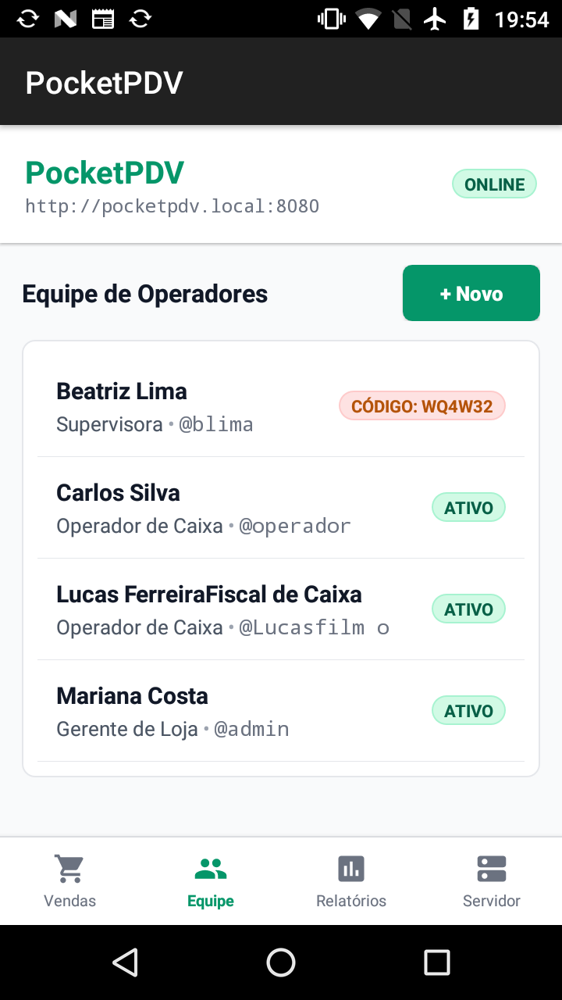
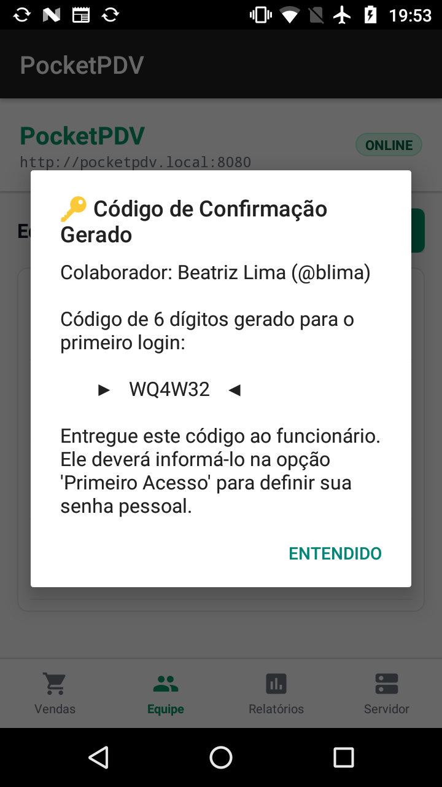
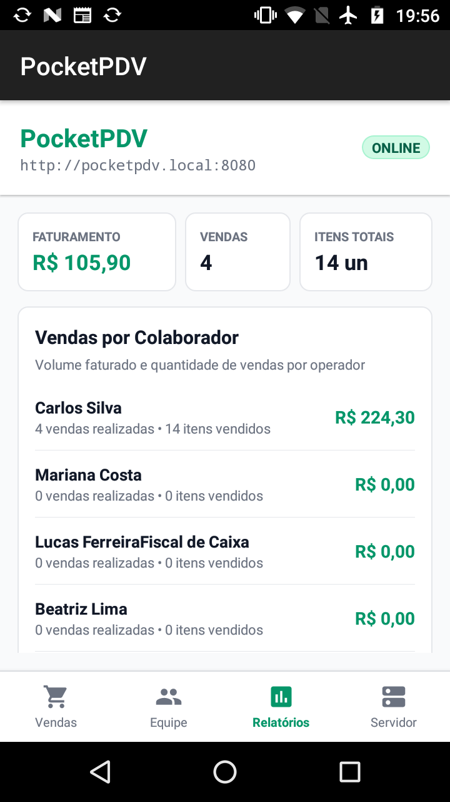
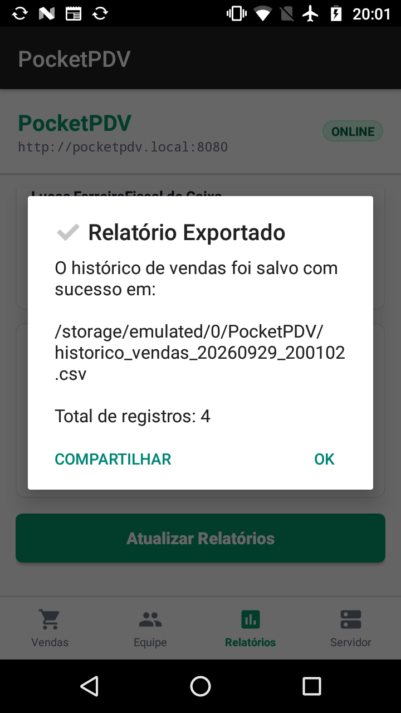

O PocketPDV transforma smartphones antigos em servidores de PDV autônomos. Executa servidor HTTP e stream SSE local embarcado em segundo plano, com interface nativa e terminal web sem necessidade de nuvem.
Projetado com foco em resiliência, baixa latência e consumo mínimo de energia.
Barra inferior com ícones vetoriais modernos para acesso rápido às abas: Vendas, Equipe, Relatórios e Servidor.
Cadastro de operadores com geração automática de código alfanumérico de 6 dígitos para definição segura de senha no primeiro login web.
Ajuste de quantidades e cadastro de novos itens com estoque mínimo através de modal HTMX leve e direto na interface web.
Server-Sent Events via EstoqueSseHub que sincroniza alterações de estoque em tempo real em todas as telas web conectadas, com heartbeat de 15 s e limite de 32 conexões para evitar vazamento de memória.
Métricas consolidadas, ranking de colaboradores e exportação instantânea do histórico completo para a pasta /sdcard/PocketPDV/.
Acesse o PDV pelo navegador em qualquer dispositivo na mesma rede pelo endereço amigável http://pocketpdv.local:8080.
Capturas reais do aplicativo executando em Android 7.1.1 (API 25) com consumo estrito de recursos.




Integração harmoniosa entre serviços em segundo plano, injeção de dependência e persistência concorrente.
Contêiner IoC minimalista embarcado com injeção de dependências em tempo de compilação/inicialização rápida, sem reflexão pesada.
Servidor HTTP rodando na porta 8080 mantido ativo pelo Android com notificação permanente e controle inteligente de WakeLock.
O modo Write-Ahead Logging permite que leituras das requisições web e da interface nativa ocorram concorrentemente sem travar gravações.
A UI nativa Android acessa os repositórios diretamente pelo contexto em memória, economizando CPU, bateria e ciclos de rede.
Endpoints HTTP e streams SSE fornecidos pelo servidor local embarcado.
| Método | Rota | Descrição | Formato |
|---|---|---|---|
| GET | /login |
Página de login do operador de caixa | HTML |
| POST | /logout |
Encerra a sessão no servidor e expira o cookie (somente POST) | HTML / Redirect |
| POST | /primeiro-acesso |
Validação do código de 6 dígitos e definição da senha | HTML / Form |
| GET | /pdv |
Interface completa do PDV web com catálogo e carrinho | HTML / HTMX |
| POST | /pdv/checkout |
Finalização da venda, baixa no estoque e disparo de eventos SSE | HTMX Fragment |
| POST | /pdv/estoque/ajuste |
Ajuste imediato de quantidade em estoque | HTMX Fragment |
| GET | /pdv/eventos/estoque |
Stream SSE contínuo de atualizações de estoque | text/event-stream |
| GET | /api/status |
Telemetria e diagnóstico do servidor | JSON |
Instruções para compilar e executar o PocketPDV via linha de comando ou Android Studio.
Execute no terminal com JDK 17 configurado:
Com a depuração USB ativa no smartphone:
No navegador de qualquer aparelho na mesma rede Wi-Fi, abra: